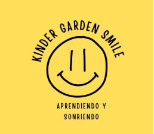
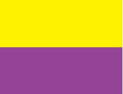

Guiar a los niños y niñas a través de una educación integral; basada en el
amor, la tolerancia, la participación y el respeto hacia los demás.
Visión
En el año 2028 el Jardín Infantil Kinder Garden Smile de Valledupar será un
jardín en el que se brindará educación de calidad, con exigencia a nivel
cultural y social de la primera infancia, que favorezca el aprendizaje y el
desarrollo de niños y niñas.
Historia
En el año 2022, nace la idea de elaborar un proyecto institucional dedicado
a la educación de los niños y niñas menores de 6 años, para cubrir un anhelo
personal como madre, y al mismo tiempo, dedicarme al cuidado de estos
pequeños a través de esta vocación y bonita labor.
En sus inicios, se hizo necesario aprender, conocer e investigar de esta
grandiosa laborar en atención a los niñas y niños de kínder, todo esto, con
el fin de consolidar un establecimiento de educación prescolar basado en
el espíritu de atención educativa de excelencia y servicio de calidad, con
la colaboración y confianza mutua de todos sus integrantes. Destacando
principalmente los valores de afecto, respeto, disciplina, alegría,
compromiso y esfuerzo.
Es así como en el año 2022 este proyecto empieza a materializarse
con el fin de dotar un sitio acorde a los requisitos que exige el Ministerio de
Educación y poner en marcha cada uno de los objetivos propuestos
enfocados a la educación de niños y niñas.
Hoy día, es un proyecto consolidado comprometido con la
excelencia educativa, compromiso con los educandos, sus familias y la
comunidad educativa en general.
Sabemos que cada año es un nuevo desafío por eso en el 2023
abrimos las puertas del jardín “KINDER GARDEN SMILE” para recibir con amor
a las nuevas generaciones de niños y niñas.

Escudo
Lema
Aprendiendo y sonriendo.

Bandera
Amarillo: Potencia la creatividad y la agilidad mental, da alegría,
felicidad y el optimismo.